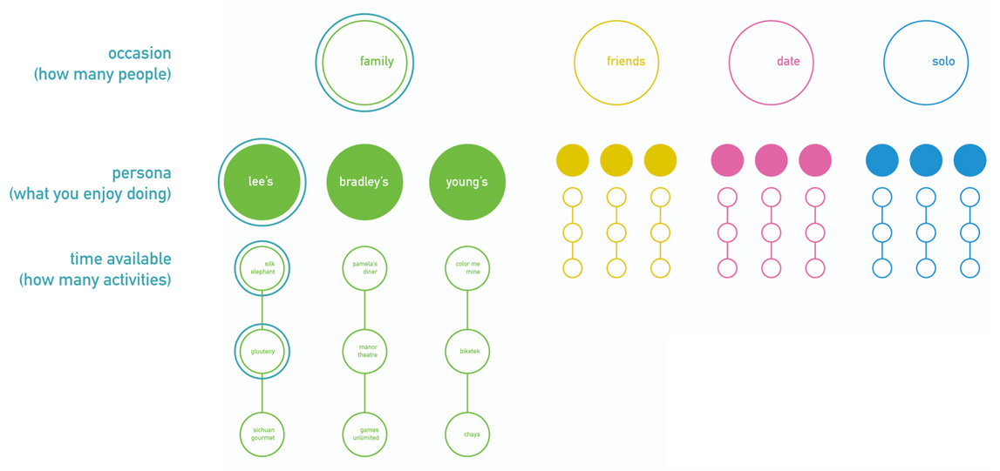
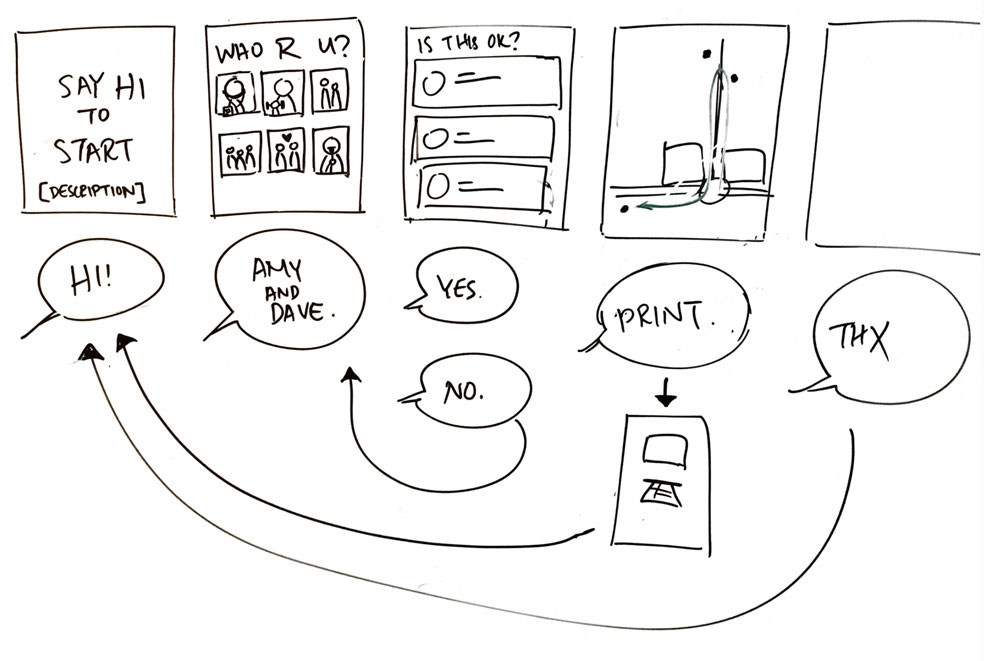
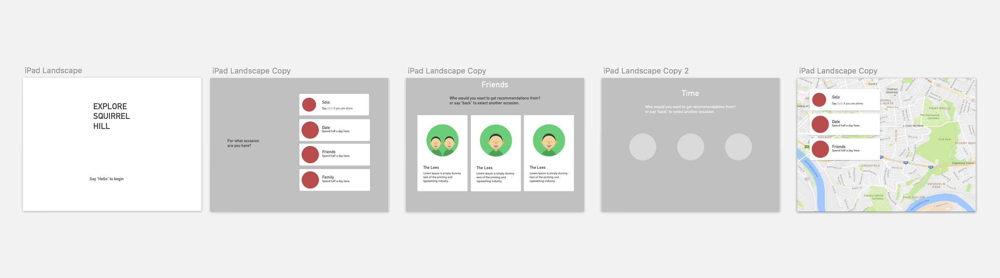

CZ
Create a wayfinding device that uses speech recognition as the sole form of input.
A kiosk that recommends enjoyable day trips tailored to a visitor's party size, interests and amount of available time.
Role Designer, Illustrator
Squirrel Hill is a residential neighborhood in Pittsburgh, PA that offers a diverse selection of stops for entertainment, food, and shopping. Locals typically frequent the same tried-and-true stops, so we wanted to bring attention to the area's lesser-known "hidden gems."
We generated itineraries based on the user's inputted persona, type of trip, and amount of time in their visit.
We perused Yelp for possible destinations to recommend. Based on the kinds of activities we found, we constructed personas loosely defined as people who enjoy 1) trying new food, 2) thrills and new experiences, and 3) quiet activities.
We then asked what type of trip it was: 1) a solo adventure, 2) a hangout with friends, 3) a date, or 4) a family trip. We generated up to 3 stops for each occassion.
Finally, based on the visitor's amount of available time, we provided one, two, or all of the stops in the final itinerary.
Storyboards and journey maps helped us feel out the flow of the questions. We designed them intentionally to only prompt for one-word answers, to minimize chances for input error.
We also wanted our device to be accessible on-site for public use. A kiosk fit this description well.
 The speech-based interface was a constraint that pushed me to think about interactions more particular to a voice UI. For example, the chance of input error with voice is higher than touch, so we designed for short answers. When writing questions, we needed to identify precisely what each step was asking.